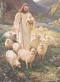
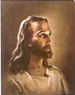

Образ Христа.
У нас здесь вышел спор. Основа для спора была, прямо скажем, ерундовская, бессмысленная. Вероника потом меня отчитывала, что, мол, не надо было устраивать дебаты там, где, вроде-бы, никому это не нужно. Но эта дискуссия помогла мне (я могу говорить, разумеется, только от себя) отчётливей увидеть образ мышления моих братьев и сестёр.
В этом смысле громкая и острая дискуссия оказалась носителем позитивной информации к размышлению. Да, спора и излишней горячности можно было бы избежать, но в этом случае мало кому довелось бы высказаться, а узнать о чём человек думает можно только тогда, когда он говорит вслух. И мне хотелось бы ещё раз изложить свою точку зрения по данному вопросу. Делаю я это потому, что, как я много раз говорил, то, что Бог открыл мне, я должен передать другим. Если я этого не сделаю, то я здесь никому не нужен. Знание не должно служить его носителю; оно должно быть достоянием других. Но это только одна сторона вопроса.
Другая сторона выглядит следующим образом: даже если я ошибаюсь, то и тогда человек может вынести пользу, хоть и из ошибочной теории, научиться чему-то, проверить свои собственные идеи. Всё, что требуется, это уметь слушать и анализировать услышанное.
Недавно мне довелось услышать рассказ о спутнике, который американцы запустили для наблюдения за Марсом. По рассчётам учёных этот сателлит должен был весьма долго провисеть над планетой, посылая ценную информацию на землю. К сожалению жизнь этого чуда технической мысли, стоимостью в 300 с лишним миллионов долларов, оказалась гораздо короче, чем было задуманно. Спутник весьма быстро был втянут в поле притяжения Марса и приказал всем нам долго жить. Причиной его гибели оказалось несоответствие в системе мер и весов. Какие-то компоненты проекта были калиброваны в современной метрической системе, т.е. в сантиметрах, миллиметрах, граммах и миллиграммах; а вот другие компоненты калибровались в империальной системе, т.е. в дюймах, ярдах, фунтах и прочей ерунде. Таким образом произошёл конфликт именно там, где он произойти не должен был. В какой-то лаборатории рассчёты были сделаны в старых мерках. Этого было достаточно, чтобы сила притяжения Марса на трёхсотмиллионный контейнер, напичканый электроникой, оказала неожиданное воздействие. А ведь этого можно было избежать, если бы люди более внимательно прислушивались к тому, что исповедовалось в другой лаборатории.
Я надеюсь, что эта ошибка, хоть и дорогостоящая, принесла пользу, даже и так, что кому-то пришлось здорово ответить за плохой контроль продукции на выходе.
Притча 27:17 говорит: ''железо острит железо; и человек изощряет взгляд друга своего.'' Вот, именно и цель наших с вами занятий – изощрять, то-есть, делать взгляд каждого из сидящих здесь на Писания более точным; помогать друг другу понимать Слово Божье лучше и глубже. Когда учитель учит студента, то ''железо'' его знаний не только острит ''железо'' знаний ученика, но и его собственное ''железо'' становится острее. Как сказал один раввин, он многому научился у своих учителей; большему научился у своих друзей, но самому большему научился у своих учеников. Если мы, уча других, учимся сами, то можем сказать, что недаром провели время на этом месте.
Конечно, возможно кому-то моё желание понять то, чего я не понимаю, покажется ненужным, портящим нервы, и отбирающим время занятием. Я этого кого-то судить не собираюсь. У каждого свой дар и свои возможности. И навязывать свои взгляды и методы другим я не имею права. Всё, чего я добиваюсь, это чтобы со мной не соглашались, доказывали в чём я неправ. Всё, чего я требую, это чтобы доказательства несогласия были основаны на Писаниях.
Как сказано: ''Ибо слово Божие живо и действенно и острее всякого меча обоюдоострого: оно проникает до разделения души и духа, составов и мозгов, и судит помышления и намерения сердечные'' (Евр. 4:12). Слово Божье должно выступать арбитром и судьёй в наших дискуссиях. Но, как требовал Апостол Павел, всё должно проходить в чинной и благопристойной атмосфере. И если я был в той дискуссии излишне горячим и шумным, я прошу прощения у всех присутствующих.
Koгда я обдумываю какой-либо текст, или какую-то идею, я часто пользуюсь разными внебиблейскими материалами. Это могут быть исследования историков; иногда большую пользу оказывают труды различных раввинов и отцов церкви. Такие материалы хотя и не написаны самим Богом, тем не менее, могут быть написаны под руководством Святого Духа, а потому не должны считаться вредными, или бесполезными. Разумеется, и эти материалы должны калиброваться самой Библией. Здесь я вступаю на скользкую почву, поскольку есть люди, которые оспорят моё мнение о Богодухновенности тех или иных текстов.
Тема эта слишком сложна, чтобы освещать её сейчас, поскольку наша задача сегодня совершенно другая. Можно было бы посвятить этому некоторое время в будущем. А сейчас вернёмся к нашей теме. Итак, казалось бы, здесь очень легко провести границу между истиной и ложью: то, что в согласии с Библией – истина, принимаем; то, что не в согласии с Библией – ложь, выбрасываем. Только здесь не всё так просто, как кажется. И мне хотелось бы разъяснить свою позицию на основе той именно нашей дискуссии. Хочу вкратце напомнить исходные данные того, о чём мы сейчас говорим.
Девочка, гений-художник, начавшая рисовать в раннем возрасте, изображает на своих картинах Иисуса Христа, который, по её убеждению и утверждению явился ей. И она изображает Иисуса именно таким, каким она его видела в откровении. На этих картинах я увидел Иисуса, облачённого в блестяще белую одежду, с гладко причёсанными, хорошо постриженными волосами (правда, иногда развевающимися от ветра), с идеально подстриженной и ухоженной бородкой.
В общем, очень похоже на примеры современной коммерческой живописи, с уклоном в католический стиль. Подобного типа и стиля образы характерны для плакатов и открыток, которыми забиты магазины, торгующие предметами христианского содержания.
Увидев эти картины, я немедленно заявил, что сомневаюсь в том, что именно Иисус являлся художнице. Мне показалось весьма невероятным, что, рисуя Иисуса с живой модели, если можно так выразиться, художница изобразила Его практически никак не отличающимся от образов, которые можно увидеть на современных открытках. Вокруг моего заявления и разгорелась бронебойная дискуссия, едва не закончившаяся рукоприкладством.
А теперь мне хотелось бы напомнить всем нам какими соображениями я руководствовался в своём заявлении. И здесь я буду опираться не на утверждение, что Иисус мне каким-то образом явился. Нет, откровений духовно-визуального характера у меня не было. Никто мне не являлся и не открывался. И я не изменяю своему убеждению, что действие Святого Духа не обязательно должно сопровождаться какими-то чувствами, эмоциями, волнением, возбуждением, видением и т.п. Нигде в Библии мы не увидим, что присутствие Святого Духа должно ощущаться нашими органами чувств. Скорее, проявления эмоционального характера могут являться реакцией нашего организма на результат действия Святого Духа. У меня возникает невероятная радость, когда Святой Дух открывает мне какие-то духовные истины, указывает мне на какой-то стих из Писаний, который и будет ответом на мои вопросы, подведёт итог моим размышлениям и поискам.
Но эта радостная реакция вторична; Святой Дух не производит во мне радость с целью доказать Своё присутствие. Разумеется, Он может и это, когда захочет, но тогда эта радость не будет эмоциональной. Это духовная радость, объяснения которой невозможно найти в сфере наших чувств. А вот когда Он что-либо открывает мне, это открытие всегда будет в точности соответствовать тому, что говорят Писания. Так вот, я утверждаю, что, если человеку было видение, или откровение какого-либо толка, и заявление это сделано в Христианском контексте, такое откровение или видение обязательно должно быть проверяемо на матрице Божьего Слова. Проще говоря, видение можно проверить и объяснить текстами Святого Писания. Если в Писаниях нет подтверждения этому видению, но его можно объяснить какими-то традициями в рамках Иудаизма, или Христианства, тогда заявление всё ещё может иметь законные основания.
Если же подтверждения нет ни там, ни там, то такой опыт смело можно объявить не исходящим от Бога. Бог противоречить Сам Себе не может, не может Он и лгать. В таком случае лживым должен быть личный опыт человека. Я не утверждаю при этом, что этот человек обманывает других. Он сам может быть обманут и, если проверка невозможна, сообщает другим лживую информацию.
Итак, что же дало мне право заявить, что девочка Иисуса Христа не видела?
Мы рассмотрим несколько моментов, на которых я строю своё утверждение.
Итак, мы видели Иисуса Христа с длинными, ухоженными волосами, и с коротко стриженной, ухоженной бородой. Не будем забывать, что художники эпохи Возрождения часто изображали Иисуса на своих картинах. Их образы, по моему мнению, также имеют мало общего с реальным Господом, но история с гениальной юной художницей меня привела в замешательство.
Итак, что же здесь необычного?
Мне хотелось бы начать с утверждения, что реальный Иисус, нравится это кому-то, или нет, был евреем.
То есть, Он был абсолютно типичным евреем в еврейской среде. Мы не говорим о впечатлении, которое Он производил на окружающих, мы не говорим о том, как Его воспринимали те, кто был близко к Нему. Мы говорим сейчас о том Иисусе, каким Он впервые показался Своему народу. Вспомним, с каким цинизмом отнёсся к Нему Нафанаил, впервые увидевший Господа. ''Разве из Назарета может быть что хорошее?'' (Иоанна 1:46). Этот цинизм у Нафанаила прошёл только после того, как Иисус рассказал ему то, о чём, похоже, никто не мог знать.
И у меня возникает естественный вопрос:
Почему на Иисуса не смотрели, как на диво до тех пор, пока Он не начинал говорить? Почему вопросы к Иисусу возникали только после того, как Он творил что-либо необычное? Я думаю, что это потому, что Он внешне никак не выделялся из обычной израильской толпы. Закхей-мытарь залез на дерево, чтобы увидеть Иисуса, но, скорее всего, не мог отличить Его от толпы до тех пор, пока Господь Сам не обратился к нему.
Да и фарисей Никодим пришёл к Иисусу на разговор только после того, как увидел чудеса, творимые Господом.
Нет, Иисус внешне не должен был отличаться от толпы, от обычного израильтянина. Вот ещё несколько стихов из Библии в подтверждение моему убеждению. Иоанн 1:11 ''Пришёл к своим, и свои Его не приняли''. Не приняли не потому, что Он выглядел не так, как они, а потому что говорил не так, как фарисеи и книжники. Внешне Он был вполне своим. Исайя 53:2 ''нет в Нем ни вида, ни величия; и мы видели Его, и не было в Нем вида, который привлекал бы нас к Нему.'' Обычный еврейский учитель, в котором не было ничего, что привлекало бы взор. Его видели, но не замечали до тех пор, пока Он не начинал говорить. И тут я хотел бы обратить ваше внимание на кое-какие детали Его образа. Давайте взглянем на несколько изображений Иисуса, невзирая на их некрасочный вид.
|
 |
 |
Конечно,
ежели мы понимаем, что перед нами произведение искусства, хорошее или
плохое, мы понимаем и то, что художник не изображает реальный образ.
Изображение на картине всегда будет таким, каким художник
представляет его себе. Оно будет частицей художника. И в
этом нет ничего плохого.
Плохо будет с нашей стороны ругать художника за ''неправильное'' изображение объекта. Так, верующим свойственно ругать Леонардо да Винчи за ''неправильное'' изображение Иисуса и Его учеников в картине ''Тайная Вечеря.'' Конечно, образы и вся обстановка на этой картине далеки от оригиналов, но ругать Леонардо за его собственное понимание образов просто глупо.
Если бы он сфотографировал тайную вечерю, а затем раскрасил её, да ещё и изменил лица, тогда он был бы повинен в фальсификации. Но Леонардо ни Господа, ни Его учеников никогда не видел, и изображал только то, что чувствовал. Его чувства могли быть, и были, неправильными, и это привело к искажению образов. Но вот в чём беда! Леонардо, ведь, никогда и не утверждал, что Господь ему являлся, и что ему было видение тайной вечери. То же самое происходит и с любым художником, который хочет изобразить Иисуса. Художники никогда не утверждали, что видели Господа.
А в случае с нашей юной художницей всё гораздо хуже. Она утверждала, что Господь ей явился, и она изобразила Его, так сказать, с натуры. Вспомним ещё раз, что Иисус выглядел как обычный еврей того времени. Но как же должен был выглядеть обычный еврей тогда? Взглянем внимательно ещё раз на картинки.
Первое, что настораживает меня это то, что Иисус ну никак не подходит под тот стандарт, которым я меряю обыкновенного еврея. Возьмём причёску. На всех картинах Иисус изображён с длинными волосами. Ну и что же, спросите вы? Ведь Иисус был назореем, а назореи, как известно, давали обет не стричь волос. Вот и Иоанн 19:19 говорит: ''Пилат же написал и надпись и поставил на кресте. Написано было: Иисус, Назорей, Царь Иудейский.''
Очень хорошо. Назорей. Но давайте проверим, всё ли здесь сходится. В книге Числа 6:2 и ниже весьма обстоятельно говорится об обете назорейства. Человек, решивший посвятить себя обету назорейства, отделял себя для служения Богу, не стригся и не пил никакого виноградного вина или сока. Вроде бы вполне подходит к образу Иисуса на картинках. Но вот беда, назорейство из книги Чисел и других разных мест в Писаниях, где говорится о таком обете, например Суд. 13:5, не имеет ничего общего с надписью на табличке на кресте. Потому что на самом деле на табличке было написано – Назарянин. Чувствуете разницу? Назорей и Назарянин. Назарянин, это житель Назарета Галилейского. Терминология нас немного запутала, но она же запутала и меня.
Ведь в Русской Библии употребляется только одно слово – назорей. А заглянув в Лексикон, мы найдём там два слова – Назорей и Назарянин. И я попался на эту удочку. И дал вам неправильную информацию, за что и прошу прощения у всей честной компании. Матфей 2:23 ещё больше запутал ситуацию: ''И пришед поселился в городе, называемом Назарет, да сбудется реченное чрез пророка, что Он Назореем наречётся.'' Но если мы откроем Исайию пророка 11:1-2, то даже и слова Назорей там не найдём. Мы эту проблему постараемся решить как-нибудь в другой раз, а сейчас достаточно сказать, что Иисус Назореем-то как раз и не был. И волос длинных Он не носил, а вовсе даже и короткие, стриженные, а не стриг Он висков, как и было указано Моисеем в книге Левит 19:27.
Там, в Русской Библии понять заповедь довольно трудно. И английские переводы не помогают. Но если мы посмотрим на традиционное ортодоксальное понимание этого стиха, то увидим, что ортодоксальные нынешние евреи понимают его именно так: они стригут волосы головы, но не стригут висков, и волосы на висках растут длинными и завиваются в локоны, пейсы на Иддиш.
Мне доводилось видеть изображения раввинов на картинках, как и самих раввинов, и всегда, или часто, они имеют эти пейсы по бокам головы. Поскольку Иисус был раввином, т.е. учителем, то Он, скорее всего, мог иметь такие локоны по бокам головы. Но на самом деле это нам не важно. То, как ортодоксальные евреи трактуют Писания, не является аксиомой для исследователей Библии; более того, скорее всего они трактуют их согласно традиции. То же самое относится и к бороде.
Левит 19:27 понимается ортодоксами именно так – не портить краёв бороды. Вы увидите, что ортодоксальные евреи сейчас подстригают бороду по сторонам лица, но не стригут её по длине. Мне могут возразить, что сейчас, мол, не то, что две тысячи лет назад. И традиция, мол, меняется. Это так, но не в традиционном иудаизме. Евреи живут по определённым традициям многие сотни и тысячи лет. Именно таким образом им удавалось сохранить свою идентификацию, невзирая на все преследования и массовое уничтожение.
Ещё один момент. По мнению историков Иисус, будучи коренным израильтянином, должен был иметь цвет кожи более тёмный, чем на представленных изображениях. Израильтяне, не смешанные с другими народами, имели, скорее всего, оливковый цвет кожи. Сейчас можно увидеть два основных генотипа израильтян, светлокожие и тёмнокожие. Это произошло от смешения крови натуральных израильтян с европейцами и с африканцами. Тогда, во времена Иисуса, такое деление было крайне редким. На картинах мы чаще всего видим Иисуса весьма европейского вида, с прямым коротким носом греко-римского типа, и с высоким, греческим лбом. Но, будучи по материнской линии потомком многих поколений семитов, черты лица Иисуса должны были быть семитскими.
На одной из картинок мы видим сцену крещения Иисуса Иоанном Крестителем. В этой сцене много придуманного художником, который и не утверждал, что видел Иисуса в видении. Весьма коротковолосый, короткобородый и одетый в белый балахон Иоанн, который, кстати, был Назореем, и носил только верблюжью шкуру, крестит длинноволосого и короткобородого Иисуса, также одетого в белый балахон. Напоминает мне это церемонию крещения в церквях. Иисус держится за руку Иоанна, который собирается положить Его в воду лицом вверх.
Но, конечно, всё должно было выглядеть совсем наоборот. А крещение, скорее всего, происходило так, что человек сам опускался в воду, а крестивший его только помогал ему выйти из воды. Так это происходит и сейчас.
Итак, что же нам удалось установить? Я не хочу утверждать, что картины юной художницы абсолютно неверны. Я пытаюсь доказать только то, что принимая на веру всё, что нам говорят другие, мы впадаем в опасность очень сильно исказить действительность по причине нашей доверчивости. Конечно, когда дело идёт о житейских вопросах, то доверчивость часто играет плохие шутки с нами. Некоторые принимают это к сведению и стараются этих ошибок не повторять. Другие так никогда и не учатся, и повторяют свои же ошибки из года в год всю жизнь. Но здесь дело идёт не о наших проблемах, а о Священных Писаниях. И ничему не научиться из них, значит всю жизнь провести в состоянии младенчества. Плюс, когда мы свидетельствуем о Христе, мы и другим предоставляем неверную информацию. Такая позиция приводила много раз к большим проблемам в истории Христианства. И мне хочется, чтобы нас, верующих не могли упрекнуть, что мы подтасовываем факты, чтобы обратить людей ко Христу.
Аминь.